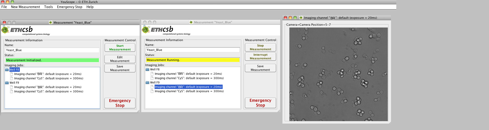

Example 1 - Microplate Measurement
Video 1: Dummy video which has to be replaced by real video. Just upload your video to youtube, and then change the corresponding link.
A Measurement Procedure for the following Purpose
Every 5 min three different kinds of channels should be imaged for the cells in 6 wells of a microplate: (A) The cells should be imaged in bright field light. (B) The emitted blue light of the fluorescent proteins in these cells should be visualized. (C) Out-off focus bright field images of the cells should be taken. All three jobs should be repeated twice for all 6 wells in the microplate.
Set up of the Measurement
(1) In Measurement Properties the name of the sample for identification as well as the Output Directory and the file-type dependent on the software used later for image processing should be given. It is advisable to save them in Folder Structure for a better organization. In this case for Measurement Finishes the option After a given number of executions has to be selected and in the field upcoming below the number 2 has to be tipped. The three jobs for the 6 wells are executed twice. For the iteration through all wells Every fixed period has to be selected and in the upcoming field below 300 s has to be tipped in the field for the time period. One execution/iteration is 300 s long. Last, for Stay in one well the option As long as it needs has to be selected. After the images are performed for a well, it immediately goes on with the next well. If the period of the task is longer than the time, that is needed for the imaging jobs in the wells, the microscope waits till it enters the second cycle.
(2) In Measurement Type the kind of microplate, in our case the 96-well microplate has to be marked.
(3) Now in Measured Positions the wells containing the sample have to be highlighted and the option focus for each well has to be stored should be marked. Now the fine configuration must be rerun for every well with Run Fine-Configuration. A new live stream window appears, where the optimal imaging position in the well and the focus have to be adjusted manually and controlled on the screen using the option Increase Contrast for better visibility.
(4) In Measurement Start and End Settings usually nothing has to be changed.
(5) In Definition of Measurement Tasks the kind of jobs have to be selected. By clicking on New job a list of jobs appears and Imaging job has to be selected. A new window turns up containing the parameters for this imaging job. (i) For our microscope we grouped the channels for measuring red-, green-, yellow- images, or the bright field image in one group and called the channel for bright field measurement BR and for the blue image Cy5. Therefore, we select the Channel Group the BF channel with an exposure time of around 20 ms for our microscope as well as sample and added the job to the task. (ii) An additional imaging job with the Cy5 channel and the exposure time of 300 ms for our microscope and sample has to be selected for a blue image and also to be added to the task. Finally the job type Out-Off-Focus has to be selected with the option Change Autofocus, if the autofocus on the microscope is switched on. A good value for the autofocus offset for our microscope is 10, and the channel for bright field in the Channel group Channel with an exposure time of 20 ms. The optimal exposure times are determined as describe in Preparation of a Measurement in Coarse adjustment of the Microscope. At the end clicking Finished opens the window for controlling the measurement, labeled with Measurement and the name of the measurement. It is important that the Save images option is selected.

Execution by the Microscope
The action of the microscope can be followed in the window for controlling the measurement. Each well-folder contains an image-name, that has to be clicked to open a window, in that the images are visualized. The microscope executes all three imaging jobs for a well, before it moves to the next well. The imaging in the wells is performed without a break and therefore the microscope waits at the end of the first cycle till rest of the 300 seconds of the task period are over and continues with the second execution of the task.

{kind=link}
{kind=link}
{kind=link}
{kind=link}
{kind=link}
{kind=link}
{kind=link}
{kind=link}
{kind=link}